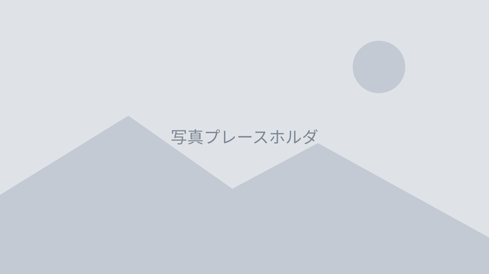

会報サンプル

発足から二十年。会を支えてきたのは、名簿には残らない小さな手間の積み重ねでした。 節目の年に、これまでとこれからを見つめ直します。

発足から二十年。会を支えてきたのは、名簿には残らない小さな手間の積み重ねでした。 節目の年に、これまでとこれからを見つめ直します。
会が生まれた年の冬も、ちょうどこのくらい寒かったと記憶しています。 公民館の一室に十二人。あのとき決めたのは、大きな目標ではなく、 月に一度必ず集まるという、それだけのことでした。
二十年のあいだに、会員は三百人を超えました。 けれど変わっていないのは、誰かが会場の鍵を開け、 誰かが椅子を並べ、誰かが最後に電気を消していく、その順番です。
本号では、長く関わってこられた方々に話を聞きました。 派手な出来事はほとんど出てきません。 それでも、続けるとはこういうことかと、読み終えて思っていただけたら幸いです。
発足時から関わる三名に、二十年を振り返ってもらいました。
「会をつくろう」と言い出したのは誰だったのか、 いまだにはっきりしないのだと三人は笑います。
続けようと思って続いたわけじゃない。 やめる理由が、そのつど見つからなかっただけです。 — 発足時からの会員・吉川 稔さん
会報のバックナンバーをめくると、行事の写真が並びます。 けれど三人が口をそろえて挙げたのは、 写真に写っていない準備の時間のことでした。
「片づけまで残る人が毎回いる。それがこの会の強さだと思います」
朝七時に集合し、二時間ほどで四十五袋を回収しました。 今年は中学生の参加が六名あり、例年より人手に余裕がありました。
次回は十月を予定しています。軍手と飲み物は各自でご用意ください。
三日間で延べ八十二名が参加しました。工作、書道、 地域の歴史を学ぶ時間の三本立てで、公民館の二部屋を使いました。
書道の時間には、昨年度に卒業した高校生が助手として戻ってきてくれました。 「教わる側から教える側になるとは思わなかった」と話していたのが印象に残っています。
工作は木工に挑戦しました。材料は地元の製材所からご提供いただいたものです。 のこぎりを初めて握った子も多く、けが無く終えられたのは見守りの方々のおかげです。
最終日には作品を並べて小さな展示会を開きました。 保護者の方にも足を運んでいただき、会場は最後まで賑やかでした。
会場の準備は前日の夕方から始めました。机を運び、床を拭き、 材料を人数分に取り分けるところまでで二時間ほどかかっています。 当日の朝は七時半に集合し、受付の名簿と名札を並べました。
三日目の午後は、参加した子どもたちに感想を書いてもらいました。 「のこぎりが思ったよりまっすぐ切れた」「来年もやりたい」といった言葉が並び、 準備の疲れが飛ぶようでした。書いてもらった紙は事務局で保管しています。
反省点もあります。初日は受付が混み合い、開始が十五分遅れました。 次回は受付を二列に分け、名札をあらかじめ配っておく方法を検討しています。 また、飲み物の用意が足りず、途中で買い足しに走る場面がありました。
参加者の内訳は、小学一年生から三年生までが四十八名、 四年生以上が三十四名でした。学年の幅が広いぶん、工作の難易度をどう揃えるかが 毎年の課題になっています。来年度は二班に分けることも考えています。
七十五歳以上の会員のお宅を、二人一組で訪問しました。 今年は十四軒をまわり、手作りの栞をお渡ししています。
「顔を見られるのがいちばん」という声を多くいただきました。 来年度は訪問先を増やせるよう、担当を募っています。
12月20日（日）に記念のつどいを開催します。 参加費は無料、申し込みは11月末日までに事務局までお願いします。